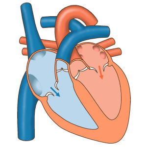
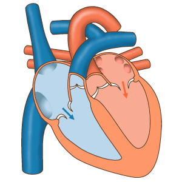

Jangan Abaikan Gejala-Gejala Jantung Bengkak Berikut Ini! | Rumah Sakit EMC
2021.06.08 01:06

Our Hospitals EMC Sentul EMC Tangerang Center of Excellence Plastic Surgery & Aesthetic Center Pain Management Center Orthopedic Spine Center Fertility Center Stroke Center Our Doctors Information Care Plus Promosi Berita ID ID LOGIN Menu
Detail Care Plus
Beranda Care plus Detail Care PlusIni Gejala Jantung Bengkak yang Tak Boleh Anda Abaikan!
7 Mei 2021 Ditulis Oleh: dr. Johan Winata, Sp.JP (K) FIHAApa yang dimaksud dengan jantung bengkak?
Jantung bengkak atau kardiomegali ( cardiomegaly ) adalah pembengkakan jantung yang membuat ukurannya menjadi lebih besar dari ukuran jantung normal. Jantung bengkak bukanlah sebuah penyakit, melainkan sebuah tanda dari kondisi klinis atau penyakit tertentu. Jantung bengkak timbul akibat respon terhadap gangguan pada otot jantung. Terdapat dua jenis jantung bengkak berdasarkan penyebabnya:
Kardiomegali Dilatasi : jantung bengkak akibat melonggarnya otot jantung sehingga volume bilik jantung menjadi lebih besar. Kardiomegali Hipertrofi : jantung bengkak akibat penebalan otot jantung atau yang disebut sebagai hipertrofi. Hal ini paling sering disebabkan oleh tekanan darah tinggi (hipertensi).Apa penyebab jantung bengkak?
Selain karena penyakit jantung bawaan, ada beberapa penyebab terjadinya jantung bengkak, yaitu:
Obesitas Tekanan darah tinggi Anemia Gangguan tiroid Jarang berolahraga Kelainan otot jantung Penyakit jantung koroner Gangguan katup jantung Detak jantung yang tak normal KehamilanApa saja gejala jantung bengkak?
Sebagian orang yang menderita jantung bengkak tak merasakan gejala apapun. Namun, ada gejala yang biasa ditemui pada sebagian penderita jantung bengkak, yaitu:
Jantung berdebar kencang Merasa kelelahan Gangguan irama jantung Sesak napas terutama saat beraktivitas atau tubuh berbaring datar Berat badan bertambah karena ukuran jantung yang lebih besar Nyeri pada dada Kaki dan tungkai mengalami pembengkakanSetiap orang bisa mengalami dan merasakan gejala yang berbeda-beda. Sebagian orang merasakan gejala ringan dalam jangka waktu panjang, namun ada juga yang tak merasakan sama sekali, atau justru bisa sangat merasakan gejala yang muncul. Oleh karena itu, penyakit ini baru bisa terdeteksi setelah seseorang melakukan pemeriksaan rongent dada.
Bagaimana cara mengobati jantung bengkak?
Rutin melakukan pemeriksaan ke dokter sangat diperlukan. Hal ini dilakukan guna mengidentifikasi penyebab dari jantung bengkak yang dialami. Setelah mengetahui diagnosis dari dokter, pengobatan jantung bengkak bisa berupa pemberian berbagai obat serta prosedur operasi. Selain itu, menjalani pola hidup sehat juga penting agar terhindar dari jantung bengkak dan masalah jantung lainnya. Pola hidup sehat bisa berupa:
Menjaga berat badan ideal Berhenti merokok Hindari konsumsi alkohol dan minuman berkafein Berolahraga sesuai rekomendasi dokter Monitor tekanan darah secara rutin Istirahat cukup Kelola stres Kurangi konsumsi garam pada makanan Kendalikan diabetes dan tekanan darah tinggi (bila ada)Itulah beberapa hal yang perlu diketahui mengenai jantung bengkak. Perlu diingat, jika pembengkakan semakin parah, kemampuan jantung memompa darah juga akan semakin menurun dan bisa menyebabkan gagal jantung, stroke, hingga kematian mendadak. Maka, jangan pernah mengabaikan setiap gejala jantung bengkak yang muncul dan segera pergi ke dokter di rumah sakit terpercaya. #LiveExcellently
Artikel di-review oleh dr. Johan Winata, Sp.JP (K) FIHA (Dokter Spesialis Jantung dan Pembuluh Darah, Konsultan Kardiologi Intervensi RS EMC Tangerang).
jantung Bagikan
Artikel Terbaru
Terapi Wicara, Lebih dari Sekedar Solusi Keterlambatan Bicara
Wajib Tahu! EKG (Elektrokardiogram), Salah Satu Tes untuk Evaluasi Kesehatan Jantung!
Hendak Melakukan Tummy Tuck? Kenali Dulu Pengertian, Prosedur dan Risikonya!
Hipertensi atau Tekanan Darah Tinggi: Ketahui Gejala, Penyebab, dan Cara Pengobatannya!
Ketahui Proses Pasang Ring Jantung untuk Penderita Jantung Koroner di Sini!
Benarkah Wanita Lebih Mudah Terkena Wasir atau Ambeien? Mari Kenali Dulu Gejala dan Cara Pencegahannya!
RS EMC Tangerang dr. Johan Winata, Sp.JP (K) FIHAJantung
Detail Dokter
Buat Appointment
Temukan Dokter
Hubungi Kami
× Buat AppointmentSilakan Login atau Daftar untuk membuat appointment.
Login Daftar × ×Center of Excellence
Plastic Surgery & Aesthetic Center Pain Management Center Orthopedic Spine Center Fertility Center Stroke CenterInformation
Care Plus Promosi NewsAbout
About Us Career Contact UsEmergency Call
RS EMC Sentul 021-2967 3000 RS EMC Tangerang 021-5097 8999 Copyright © 2018. EMC.- Penyakit Penyakit Jantung - Gejala, Penyebab, Pengobatan .
- Jantung - Gejala, Penyakit, dan Cara Mengobati | Halodoc.com
- Jangan Abaikan Gejala-Gejala Jantung Bengkak Berikut Ini .
- 11 Gejala Penyakit Jantung yang Bisa Terlihat di Kulit dan .
- Jantung - Wikipedia bahasa Indonesia, ensiklopedia bebas
- Penyakit Jantung - Pengertian, Gejala, Penyebab, Faktor .
- Mengatasi Sakit Jantung dan Serangan Jantung – Pemerintah .
- Waspada dan Kenali Lebih Jauh Ciri-Ciri Sakit Jantung .
- Patut waspada, inilah 4 ciri-ciri penyakit jantung - Kesehatan
- Tempat-Tempat Nyeri Pada Gangguan Jantung - Direktorat .
- Penyakit Penyakit Jantung - Gejala, Penyebab, Pengobatan .
adalah organ terpenting dalam tubuh manusia dan mempunyai ukuran sebesar kapalan tangan. berfungsi memompa dan menyebarkan darah . - Jantung - Gejala, Penyakit, dan Cara Mengobati | Halodoc.com
Di Indonesia sendiri, penyakit kardiovaskuler, stroke dan penyakit koroner adalah penyebab utama kematian yang menyebabkan lebih dari 470.000 . - Jangan Abaikan Gejala-Gejala Jantung Bengkak Berikut Ini .
(bahasa Latin: cor) adalah sebuah rongga, rongga organ berotot yang memompa darah lewat pembuluh darah oleh kontraksi berirama yang berulang. - 11 Gejala Penyakit Jantung yang Bisa Terlihat di Kulit dan .
7 hari yang lalu — - Jantung - Wikipedia bahasa Indonesia, ensiklopedia bebas
Tingginya angka kematian akibat penyakit , khususnya serangan , selayaknya menjadi perhatian masyarakat dan petugas kesehatan sehingga . - Penyakit Jantung - Pengertian, Gejala, Penyebab, Faktor .
Gejala paling umum dari penyakit coroner adalah angina atau angina pectoris yang juga dikenal sebagai nyeri dada. Angina dapat digambarkan . - Mengatasi Sakit Jantung dan Serangan Jantung – Pemerintah .
Gagal , merupakan suatu kegagalan otot untuk memompakan darah secara memadai ke seluruh tubuh. Aritmia, merupakan suatu gangguan . - Waspada dan Kenali Lebih Jauh Ciri-Ciri Sakit Jantung .
3 hari yang lalu — - Patut waspada, inilah 4 ciri-ciri penyakit jantung - Kesehatan
16 Okt 2020 — - Tempat-Tempat Nyeri Pada Gangguan Jantung - Direktorat .
7 Mei 2021 —
adalah organ terpenting dalam tubuh manusia dan mempunyai ukuran sebesar kapalan tangan. berfungsi memompa dan menyebarkan darah .
Di Indonesia sendiri, penyakit kardiovaskuler, stroke dan penyakit koroner adalah penyebab utama kematian yang menyebabkan lebih dari 470.000 .
(bahasa Latin: cor) adalah sebuah rongga, rongga organ berotot yang memompa darah lewat pembuluh darah oleh kontraksi berirama yang berulang.
7 hari yang lalu —
Tingginya angka kematian akibat penyakit , khususnya serangan , selayaknya menjadi perhatian masyarakat dan petugas kesehatan sehingga .
Gejala paling umum dari penyakit coroner adalah angina atau angina pectoris yang juga dikenal sebagai nyeri dada. Angina dapat digambarkan .
Gagal , merupakan suatu kegagalan otot untuk memompakan darah secara memadai ke seluruh tubuh. Aritmia, merupakan suatu gangguan .
3 hari yang lalu —
16 Okt 2020 —
7 Mei 2021 —
 
